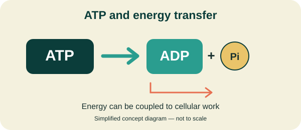
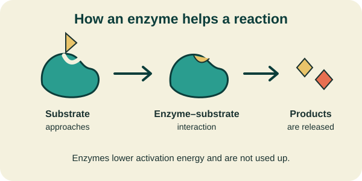

Glycolysis
Occurs in the cytosol. One glucose molecule is split into two pyruvate molecules, producing a small amount of ATP and NADH.
Powering the processes of life
Every living cell needs energy to grow, repair itself, transport substances, and carry out chemical reactions. Metabolism is the collection of chemical reactions that allows cells to obtain energy and build the molecules they need.
Adenosine triphosphate (ATP) is a nucleotide that plays a central role in transferring usable energy within cells. Cells use ATP to support activities such as muscle contraction, active transport, and the synthesis of molecules.

When ATP is converted into ADP and inorganic phosphate, the reaction can release usable free energy. Cells couple this process to reactions and activities that require energy.
Real-life connection: When you move your muscles, your muscle cells use ATP to power the proteins involved in contraction. Your cells must continually produce ATP to support ongoing activity.
Enzymes are biological catalysts. Most enzymes are proteins, although some RNA molecules can also catalyze reactions. Enzymes speed up chemical reactions by lowering their activation energy.

Enzymes do not change the overall energy difference between reactants and products. Instead, they provide a pathway with a lower activation-energy barrier.
Amylase is an enzyme found in saliva that begins breaking down starch into smaller carbohydrate molecules.
Cellular respiration is a series of reactions through which cells extract energy from nutrients. In aerobic respiration, cells use oxygen to help extract energy from molecules such as glucose, producing ATP.
Occurs in the cytosol. One glucose molecule is split into two pyruvate molecules, producing a small amount of ATP and NADH.
Takes place in the mitochondrial matrix in human cells. It releases carbon dioxide and produces electron carriers such as NADH and FADH₂.
The electron transport chain helps establish a proton gradient across the inner mitochondrial membrane. ATP synthase uses this gradient to produce ATP.
Important: These stages work together. Most ATP produced during aerobic glucose oxidation in human cells comes from oxidative phosphorylation, which includes the electron transport chain and ATP synthase.
Metabolism includes both the breakdown of molecules and the construction of new ones.
Builds larger or more complex molecules from smaller ones. These processes often require an input of energy.
Example: Building proteins from amino acids.
Breaks down molecules into smaller products. These reactions can release energy that cells capture or use.
Example: Breaking down glucose during cellular respiration.
Check your understanding
Which molecule is commonly used by cells to transfer usable energy?
Correct answers: 0
Biomolecules provide the materials cells need, enzymes help chemical reactions occur, and metabolism transforms matter and energy to support life. Together, these concepts help explain many processes in the human body.
Review Biomolecules